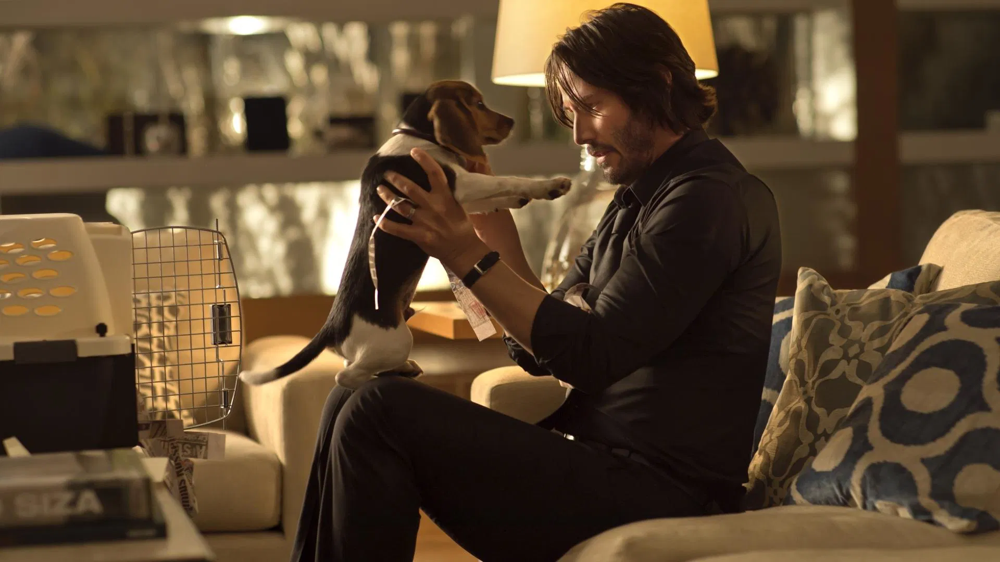

NEDAVNE RECENZIJE
Nov 9, 2025
ANTIVIRAL (2012)
Syd March is an employee at a clinic that sells injections of live viruses harvested from sick celebrities to obsessed fans. Biological communion - for a price. Syd also supplies illegal samples of these viruses to piracy groups, smuggling them from the clinic in his own body. When he becomes infected with the disease that kills super sensation Hannah Geist, Syd becomes a target for collectors and rabid fans. He must unravel the mystery surrounding her death before he suffers the same fate.

Oct 27, 2025
JOHN WICK (2014)
With the untimely death of his beloved wife still bitter in his mouth, John Wick, the expert former assassin, receives one final gift from her--a precious keepsake to help John find a new meaning in life now that she is gone. But when the arrogant Russian mob prince, Iosef Tarasov, and his men pay Wick a rather unwelcome visit to rob him of his prized 1969 Mustang and his wife's present, the legendary hitman will be forced to unearth his meticulously concealed identity. Blind with revenge, John will immediately unleash a carefully orchestrated maelstrom of destruction against the sophisticated kingpin, Viggo Tarasov, and his family, who are fully aware of his lethal capacity. Now, only blood can quench the boogeyman's thirst for retribution.